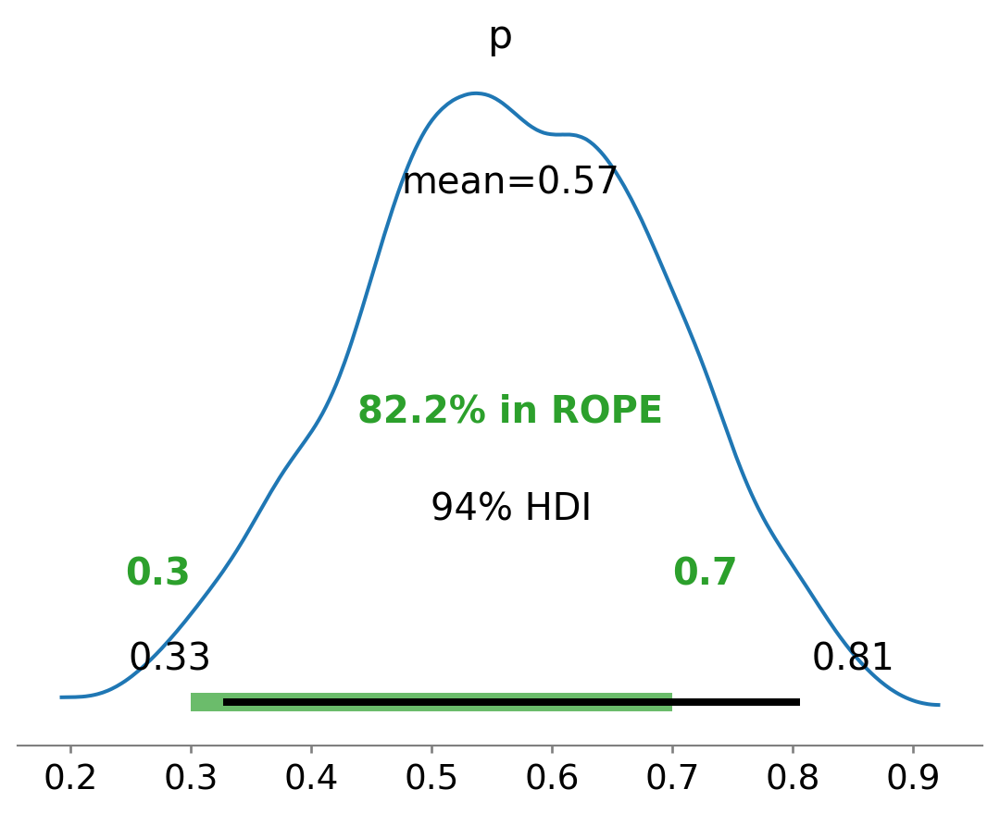

Introdução à modelagem probabilística na abordagem bayesiana.
O PyMC é uma biblioteca de programação probabilística em Python que facilita a construção de modelos bayesianos, utilizando métodos como a amostragem MCMC (Markov Chain Monte Carlo) para estimar distribuições a posteriori de forma eficiente.
Para modelar uma variável aleatória com distribuição Binomial, podemos especificar uma distribuição a priori do tipo Beta para o parâmetro \(p\), observar os dados (número de sucessos em \(N\) ensaios) e, então, obter a distribuição a posteriori utilizando técnicas de amostragem fornecidas pelo PyMC.
1 Estimativa Bayesiana com PyMC
Definir os dados
\(N\): número total de observações (ensaios Bernoulli).
\(k\): número de sucessos observados.
Definir o modelo probabilístico
Especifique uma distribuição a priori para o parâmetro \(p\), como uma Beta(\(\alpha\), \(\beta\)).
Modele os dados observados usando uma distribuição Binomial(\(N\), \(p\)):
with pm.Model() as modelo: p = pm.Beta("p", alpha=α_prior, beta=β_prior) y = pm.Binomial("y", n=N, p=p, observed=k)
Executar a amostragem MCMC
Use o método pm.sample() para gerar amostras da distribuição a posteriori.
O PyMC utiliza, por padrão, o algoritmo NUTS (No-U-Turn Sampler), baseado em Hamiltonian Monte Carlo.
trace = pm.sample()
Inspecionar os resultados da amostragem
Use az.summary(trace) para obter estatísticas descritivas: média, desvio padrão, intervalos de credibilidade, \(\hat{R}\) (diagnóstico de convergência), entre outros.
Visualize as cadeias com az.plot_trace(trace), que mostra as séries temporais e histogramas das amostras.
Visualize a distribuição a posteriori com az.plot_posterior(trace, var_names=["p"]).
Calcular probabilidades e intervalos de credibilidade
Use as amostras da posteriori para calcular quantidades como \(P(x_1 \leq p \leq x_2)\), filtrando os valores de p entre esses limites e estimando a proporção.
Faça gráficos para comparar a priori e a posteriori, ou destacar regiões de interesse com os intervalos de credibilidade.
Combine visualizações com matplotlib, arviz e outras bibliotecas para tornar as conclusões mais claras.
2 Exemplo em Python
import pymc as pmimport arviz as az # Pacote auxiliar para análise e visualização dos resultados# 1. Definir os dados observadosN =10# Número total de ensaios (Bernoulli)k =6# Número de sucessos observados# 2. Parâmetros da distribuição a priori (Beta)alpha_param =2beta_param =2# 3. Definir o modelo probabilístico no PyMCwith pm.Model() as model:# 3.1. Definição da distribuição a priori para p p = pm.Beta("p", alpha=alpha_param, beta=beta_param)# 3.2. Observações via distribuição Binomial obs = pm.Binomial("obs", n=N, p=p, observed=k)# 4. Amostragem MCMC (posteriori) trace = pm.sample()# 5. Inspeção dos resultadosprint(az.summary(trace, var_names=["p"], kind="stats"))# 6. Visualizações da amostragem e da posterioriaz.plot_trace(trace, var_names=["p"]) # Trajetória e histograma das amostrasaz.plot_posterior(trace, var_names=["p"], rope=[0.3, 0.7]);# Posteriori com intervalo de relevância
mean sd hdi_3% hdi_97%
p 0.566 0.129 0.326 0.806

3 Interpretação
A forma e a localização da posteriori dependerão tanto dos dados observados (\(k\), \(N\)) quanto dos parâmetros da distribuição a priori (\(\alpha\), \(\beta\)).
Conforme \(N\) aumenta, a verossimilhança passa a dominar o resultado, reduzindo o impacto de uma a priori moderada.
Se você alterar \(\alpha_{\mathrm{prior}}\) e \(\beta_{\mathrm{prior}}\), verá como suposições prévias mudam a forma inicial da posteriori, sobretudo em situações com poucos dados.
4 Exercício
Varie\(N\) e \(k\) para simular cenários distintos (poucos sucessos, muitos sucessos) e veja como a posteriori se adapta.
Altere\(\alpha_{\mathrm{prior}}\) e \(\beta_{\mathrm{prior}}\) (por exemplo, prior fortemente concentrada em 0.8) e observe se, com poucos dados, a posteriori permanece próxima da distribuição a priori.